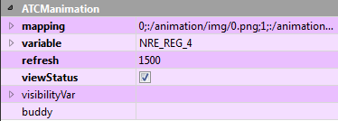

Wenn Sie das Element auswählen, erscheinen seine Eigenschaften im rechten unteren Fenster des Qtcreator-Fensters im Abschnitt ATCManimation.
Durch die Änderung einer oder mehrerer dieser Eigenschaften können Sie das grafische Erscheinung und einige Funktionen anpassen. Um die Änderung vorzunehmen, wählen Sie die rechte Spalte der entsprechenden Zeile.

Im Detail werden die Features zur Verfügung stehen:
mapping: enthält das im vorherigen Abschnitt beschriebene Wert/png-Mapping.
variable: die Zielvariable des Crosstable, auf die der aktuelle Wert des Bildes geschrieben werden soll.
viewStatus: wenn angekreuzt, wird es eine rote oder grüne Farbe haben, je nachdem, ob die Konfiguration der statusvar-Variablen fehlgeschlagen ist oder nicht und ob der Rand sichtbar ist.
visibilityVar: Wenn Sie die Sichtbarkeit des Objekts entsprechend dem Zustand einer Variablen verknüpfen möchten, müssen Sie den Namen der Zielvariablen eingeben.
HINWEIS: In allen Eigenschaften, mit Ausnahme der ATCMplugins, ist es möglich, die “Context Help” von Qt anzuzeigen, um eine Beschreibung der Operation zu erhalten: Wählen Sie die gewünschte Zeile aus und drücken Sie die Taste “F1” der Tastatur.
Um die Eigenschaften des Objekts per Code zu verwenden, geben Sie im Help→Index ein: QLabel